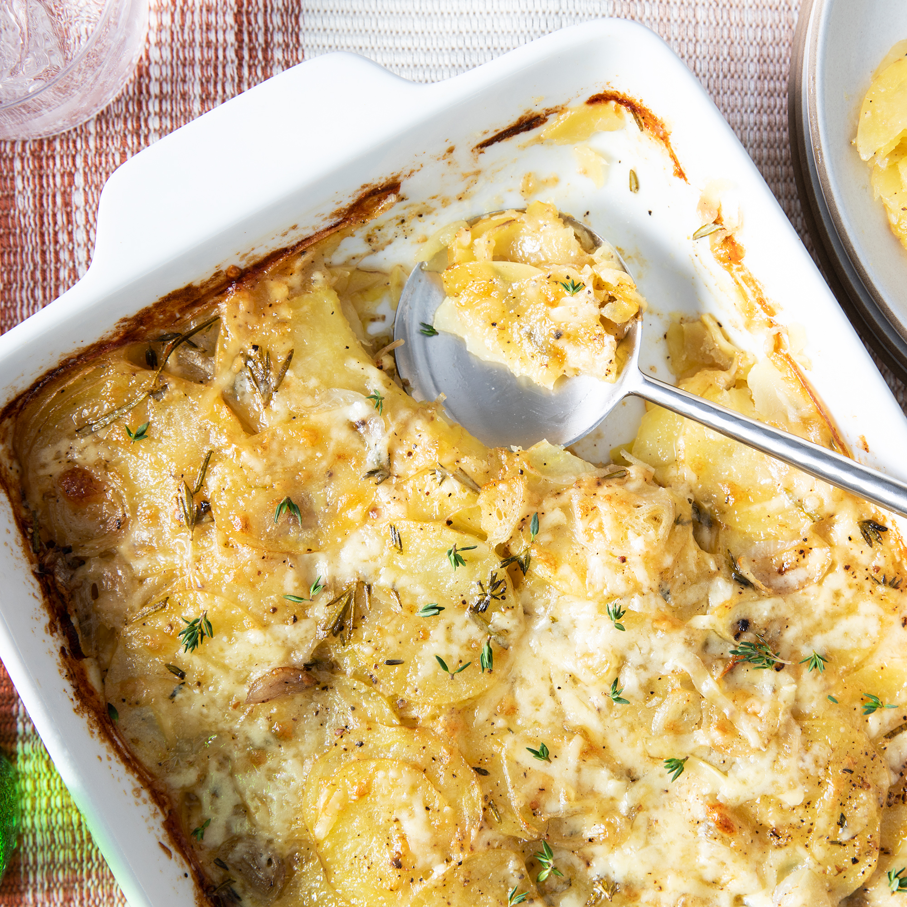

Description
Everyone in your household will love this Brunch Potato Casserole! Not only will your family love the creamy and cheesy flavors, but also the crispy bacon and hearty potatoes. And, with this recipe producing over 15 servings, there's more than enough for everyone.
Ingredients
- 4 pounds new potatoes, skinned, cut into 1-inch cubes
- 1 pound processed cheese food, cubed
- 2 cups mayonnaise
- 1 onion, finely chopped
- 1 pound bacon, cooked crisp and chopped
Steps
- Preheat oven to 350 degrees F (175 degrees C).
- Place potatoes in a large pan, fill with water to cover potatoes, and bring to a boil. Cook until potatoes are just soft. Drain, place in a large bowl. While the potatoes are still hot, gently stir in cheese without mashing potatoes. Continue to stir, every minute or so, until cheese is melted.
- In a separate bowl, stir together mayonnaise, onion, and bacon. Gently stir into potatoes and cheese. Spread into a 13x9-inch baking dish.
- Bake in a preheated oven for 50 minutes.